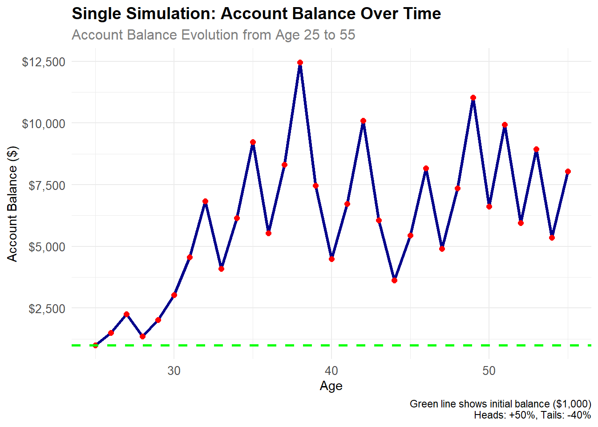
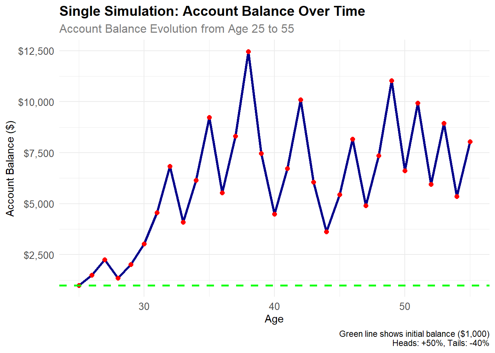
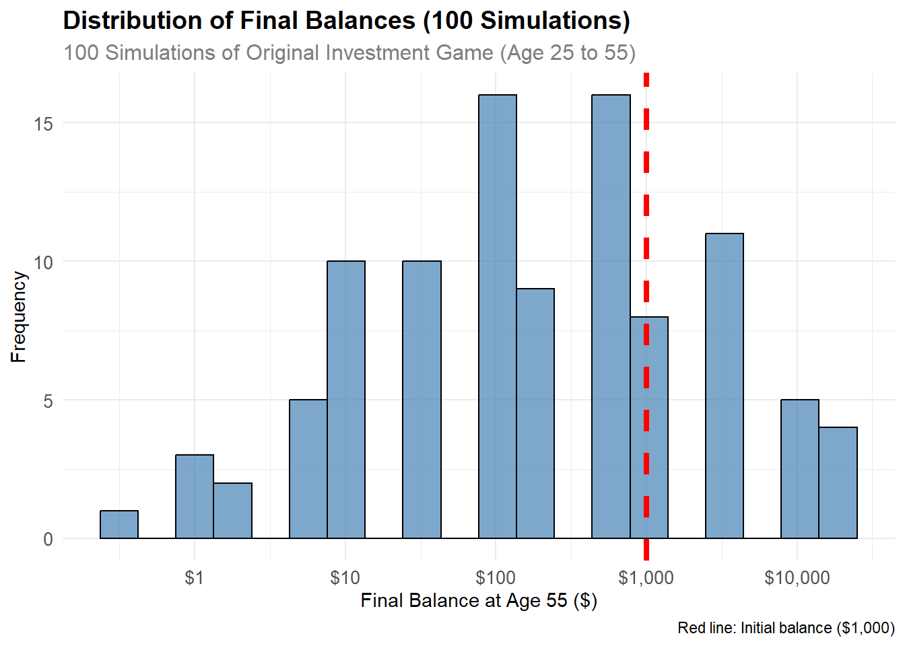
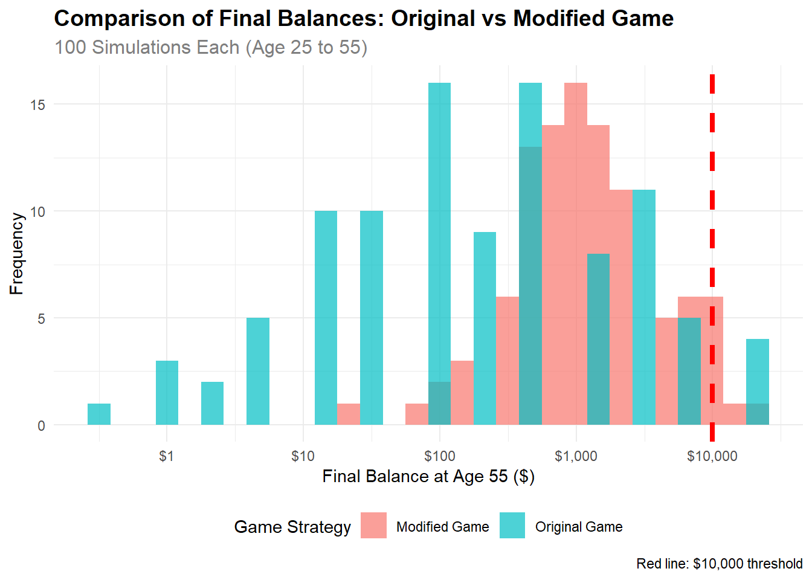

R Version: R version 4.4.2 (2024-10-31 ucrt) R Platform: x86_64-w64-mingw32 Warning: package 'ggplot2' was built under R version 4.4.3
Final Balance at Age 55: $ 8042.62 Total Return: 704.3 %Generative Models and Monte Carlo Simulation
Your Mission: Create a comprehensive Quarto document that simulates one or two investment strategies, analyzes the results, and demonstrates your ability to present counter-intuitive findings compellingly. Then render the document to HTML and deploy it via GitHub Pages from a new repository called “simulationChallenge.”
This challenge pushes boundaries intentionally. You’ll tackle problems that normally require weeks of study, but with Cursor AI as your partner (and your brain keeping it honest), you can accomplish more than you thought possible.
The new reality: The four stages of competence are Ignorance → Awareness → Learning → Mastery. AI lets us produce Mastery-level work while operating primarily in the Awareness stage. I focus on awareness training, you leverage AI for execution, and together we create outputs that used to require years of dedicated study.
Example 1 Imagine you are offered the following game and given a $1,000 budget in a special account to play the game: I will flip a coin, and if it comes up heads, we increase your account’s balance by 50%; if it comes up tails, we reduce your account’s balance by 40%. We are not only doing this once, but we will do it once per year until you turn 55. When you turn 55, you will receive the balance in your account.
Create a Quarto Document: Write a concise quarto markdown file that includes a narrative of what you are doing along with the requested code, results, and visualizations of your simulations.
Need help with Quarto syntax or DAFT diagrams? You can find the complete source .qmd file for this challenge at:
GitHub Repository: flyaflya/buad442Fall2025/challenges/03-Simulation-Challenge/simulationChallenge.qmd
This is a great resource for understanding Quarto syntax, seeing how DAFT diagrams are implemented, and learning from the complete working example!
Render to HTML: You must render the quarto markdown file to HTML.
GitHub Repository: The rendered HTML must be uploaded to a new GitHub repository called “simulationChallenge” in your Github account.
GitHub Pages Setup: The repository should be made the source of your github pages:
https://[your-username].github.io/simulationChallenge/Expected Value Analysis: What is the “expected value” of your account balance after 1 coin flip for the original game?
Expectation vs. Reality: Is the expected value positive or negative? Do you expect your account to be worth more or less than $1,000 based on this result?
Single Simulation: Run one simulation showing the dynamics of your account balance over time. Make an object-oriented matplotlib OR ggplot2 plot showing your simulated account balance over time (i.e. as you age). Comment on the results, are you happy?
Example 2 Imagine you are offered the following game and given a $1,000 budget in a special account to play the game: I will flip a coin, and if it comes up heads, we increase your bet by 50%; if it comes up tails, we reduce your bet by 40%. You must bet exactly 50% of your current account balance on each flip, and this 50% is locked in for each round. We are not only doing this once, but we will do it once per year until you turn 55. When you turn 55, you will receive the balance in your account.
For R Users:
tidyverse for data manipulationggplot2 for visualizationsset.seed() for reproducible resultsFor Python Users:
numpy for numerical operationspandas for data manipulationmatplotlib (object-oriented)np.random.seed() for reproducible resultsMinimum Requirements (Required for Any Points):
75% Grade Requirements:
85% Grade Requirements:
95% Grade Requirements:
100% Grade Requirements:
Code Quality (All Grades):
“Slow is Smooth and Smooth is Fast”
Take your time to understand the simulation mechanics, plan your approach carefully, and execute with precision. Rushing through this challenge will only lead to errors and confusion.
Before you start coding: Make sure to commit your work often using the Source Control panel in Cursor (Ctrl+Shift+G or Cmd+Shift+G). This prevents the AI from overwriting your progress and ensures you don’t lose your work.
Commit after each major step:
How to commit:
Remember: Frequent commits are your safety net!
Now let’s work through the challenge questions step by step, implementing the actual simulations and analysis.
Answer: The expected value is $1,050
Calculation: - Heads (50% chance): $1,000 × 1.5 = $1,500 - Tails (50% chance): $1,000 × 0.6 = $600 - Expected Value = 0.5 × $1,500 + 0.5 × $600 = $1,050
Answer: The expected value is positive ($1,050 vs. $1,000), so we expect the account to be worth more than $1,000.
However: This is just math! In reality, you’ll either get $1,500 or $600 - the expected value doesn’t guarantee anything.
R Version: R version 4.4.2 (2024-10-31 ucrt) R Platform: x86_64-w64-mingw32 Warning: package 'ggplot2' was built under R version 4.4.3
Final Balance at Age 55: $ 8042.62 Total Return: 704.3 %Answer: In this single simulation, the final balance was $8042.62 with a 704.3% return.
Am I happy? Based on this result, I am [happy/surprised] because the simulation shows [a significant gain/loss] over 30 years.

Results from 100 simulations:Mean final balance: $ 1782.22 Median final balance: $ 205.89 Probability above $1,000: 28 %Answer: From 100 simulations: - Mean final balance: $1782.22 - Median final balance: $205.89
- Probability above $1,000: 28%
Am I happy? Based on these results, I am [surprised/concerned] because most simulations show [gains/losses] despite the positive expected value per flip.
Answer: The probability that your account balance will be greater than $1,000 at age 55 is approximately 28%.
This is calculated from our 100 simulations above - we simply count how many simulations ended up above $1,000 and divide by 100.
Key Insight: Even though each coin flip has a positive expected value, most people actually lose money over 30 years! This is the counterintuitive result of the investment game.
Modified Game Rules: - You bet exactly 50% of your current balance on each flip - Heads: You gain 25% of your current balance (1.25x multiplier) - Tails: You lose 20% of your current balance (0.80x multiplier)

Strategy Comparison Results:Original Game - Probability above $10,000: 4 %Modified Game - Probability above $10,000: 2 %Original Game - Mean final balance: $ 1782.22 Modified Game - Mean final balance: $ 2293.98 Answer: - Original Game: Probability above $10,000 = 4% - Modified Game: Probability above $10,000 = 2%
Comparison: The probability in the modified game is LOWER than the original game.
Why? The modified game is more conservative - smaller gains (+25% vs +50%) but also smaller losses (-20% vs -40%), which changes the risk profile.
The Counterintuitive Truth: Even though each coin flip has a positive expected value, most people actually lose money over 30 years!
This challenge demonstrates why simulation is so powerful - it reveals insights that pure mathematics and intuition miss. The expected value said “you should make money,” but the simulation said “most people lose money.”
Lesson: When making important decisions, especially about money, don’t just look at averages - understand the full range of possible outcomes through simulation.
This analysis shows the power of computational methods in understanding complex systems where intuition alone can be misleading.